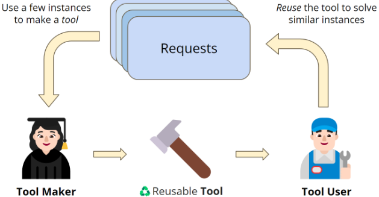
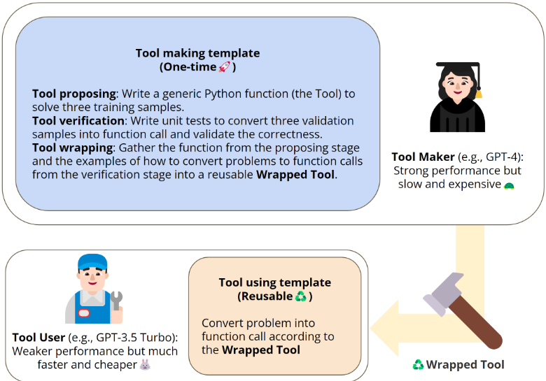
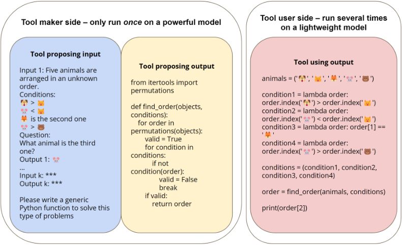
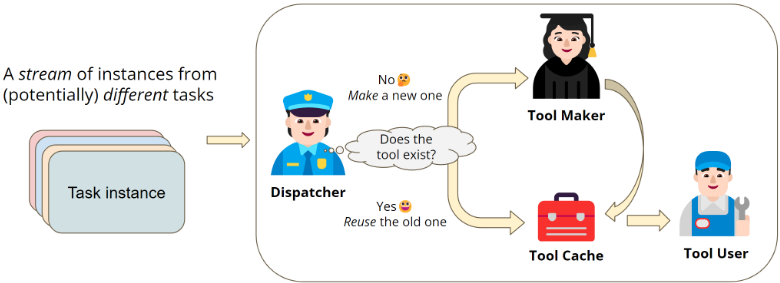

大语言模型作为工具制造者（LLMs As Tool Makers，LATM）
论文解决两个问题：LLM 借助外部工具提效受限于现成工具的可用性，且用 GPT-4 这类强模型处理所有请求推理成本过高。方法上提出 LATM 闭环框架：强模型作为 tool maker，从 3 个 few-shot 示范编写可复用的 Python 函数工具，经 tool proposing、单元测试验证、tool wrapping 三个子阶段产出可用工具；轻量模型作为 tool user，以 in-context learning 方式把新问题转成函数调用执行求解；再由 dispatcher 维护 function API 形式的工具仓库，形成按功能复用的 functional cache。关键结论：GPT-4 制作工具 + GPT-3.5 Turbo 使用工具的组合在六个复杂推理任务（含 Big-Bench）上达到与全程使用 GPT-4 相当的准确率，而 GPT-4 单次调用成本是 GPT-3.5 Turbo 的 15 倍以上，平均成本显著下降；dispatcher 识别已有工具与触发新工具制作的准确率分别约 95% 与 96%。对团队而言，这是'LLM 自建可复用技能库 + 强弱模型分工降本'的代表性工作，直接对应 Agent 工具/技能调用与成本优化两个能力域。
现有工具增强方法依赖现成工具的可用性，LLM 无法为新兴任务自行制造工具；同时用强模型（如 GPT-4）解决所有请求实例成本高昂，轻量模型（如 GPT-3.5 Turbo）又难以独立完成复杂推理任务。论文要让 LLM 像人类进化史中'自制工具'一样，为任务类别自主生成可复用工具，并通过 tool making 与 tool using 的模型分工，在保持性能的同时大幅降低系列任务的平均服务成本。
LATM 两阶段闭环框架：(1) Tool Making——强模型（GPT-4）作为 tool maker，从 3 个示范编写通用 Python 函数工具，含三个子阶段：tool proposing（生成函数，不可执行则带错误信息重试，最多重试 3 次）、tool verification（在验证样本上运行单元测试，失败则修正函数调用）、tool wrapping（打包函数代码与'问题→函数调用'示范供 tool user 使用）；(2) Tool Using——轻量模型（GPT-3.5 Turbo）作为 tool user，以 in-context learning 方式将新问题转换为函数调用并执行，可选后处理转换输出格式。另引入第三个 LLM dispatcher（轻量模型）维护工具仓库：新请求先匹配缓存中已有工具，命中则交给 tool user，未命中则判定为新任务并触发 tool maker 制作新工具，从而构成存储'功能'而非自然语言响应的 functional cache。
GPT-4 作 tool maker + GPT-3.5 Turbo 作 tool user 的 LATM，在六个任务（Logical Deduction、Tracking Shuffled Objects、Dyck Language、Word Sorting、Chinese Remainder Theorem、Scheduling Meeting，前五个来自 Big-Bench；每数据集 3 训练/3 验证/240 测试实例）上性能与全程使用 GPT-4 相当，显著优于 GPT-3.5 Turbo 的 CoT prompting；GPT-4 单次调用成本 C 超过 GPT-3.5 Turbo 单次调用成本 c 的 15 倍
Dyck Language 任务上，GPT-3.5 Turbo 作为 tool user 甚至超过 GPT-4 作为 tool user 的表现，原因是 GPT-4 在把问题转成函数调用时偶尔多余地闭合参数中的括号
dispatcher 在 100 样本、5 次随机构建的测试集上识别已有工具的准确率为 95% ± 2%；判断是否需要请求工具制作的准确率为 96% ± 3%
工具制作能力消融：难任务（Logical Deduction、Tracking Shuffled Objects）上 GPT-3.5 Turbo 5 次尝试全部失败（0/5），主要原因是工具不够通用、只对训练样本有效；简单任务（Word Sorting）上轻量模型即可胜任 tool maker
tool user 模型消融：GPT-3.5 Turbo 在性能与成本间权衡最佳；指令微调前的 GPT-3 系列（如 ada）优于微调后版本（如 text-ada-001），作者推测指令微调损害了对 tool using 至关重要的 in-context learning 能力
复用 GPT-4 生成的 CoT 给 GPT-3.5 Turbo，效果与人工编写 CoT 相近甚至更差，远不如 LATM；60 次工具制作试验中仅 2 次借助错误信息完成自我修正
与已有 tool-using 工作不同，LATM 让 LLM 自行制作可复用工具（Python 函数）而非仅调用现成工具，并强调工具可复用性与'强弱模型分工'带来的成本效益：一次性的 tool making 成本摊销到多次 tool using。相比 Chameleon 等用 Python 执行器精确求解子步骤，LATM 用执行器产出可复用工具去解决同类其他实例；相比 language model cascade 的简单级联，LATM 识别'适合用新工具解决'的任务类别并把该类推理交给小模型。此外提出 functional cache：缓存一类请求的功能（工具）而非自然语言响应，扩展了传统缓存机制，并实证 Python 函数工具是比 CoT 更通用的推理形式。
相关度级别：high
命中能力域：3.3 Agent 架构与工具使用 | 3.5 评测与可靠使用 | 3.4 多智能体协作
理由：直接命中 3.3：核心贡献正是 LLM 自主生成可复用工具/技能（Python 函数即技能）、函数调用执行，以及通过单元测试保障工具可靠性的 harness 设计。同时命中 3.5：系统评测了各模型在 tool making/tool using 角色上的能力边界（含消融实验），并给出以分工与 functional cache 降低推理成本的完整方案，属于成本与效率优化的代表工作。tool maker/tool user/dispatcher 三角色编排与显式'任务分工'也触及 3.4，但属流水线式角色分工而非对等多智能体协作，为次要命中。对'把模型用好而非训练模型'的团队，技能库沉淀、强弱模型路由、功能缓存都是可直接借鉴的工程模式。
建议动作：深入精读并做内部分享
arXiv:2305.17126v2 [cs.LG] 2024年3月11日
Tianle Cai 1 , 2 ∗ Xuezhi Wang 1 Tengyu Ma 1 , 3 † Xinyun Chen 1 Denny Zhou 1 1 Google Deepmind 2 普林斯顿大学 3 斯坦福大学
最近的研究表明，大语言模型（LLM）在借助合适的外部工具时，有潜力提升自身的问题解决能力。在本工作中，我们进一步推进了这一概念，提出了一个闭环框架，称为 LLMs As Tool Makers（LATM），其中 LLM 为解决问题创建自己的可复用工具。我们的方法包含两个阶段：1）工具制作（tool making）：一个 LLM 充当工具制作者（tool maker），为一组任务制作工具，其中工具以 Python 实用函数的形式实现；2）工具使用（tool using）：另一个 LLM 充当工具使用者（tool user），应用工具制作者所构建的工具来解决问题。工具使用者可以是与工具制作者相同的 LLM，也可以是不同的 LLM。在问题求解服务器端，随着新请求的出现，工具制作能够持续生成并缓存工具。该框架使后续请求能够通过相应的 API 访问缓存的工具，从而提高任务求解的效率。除了让 LLM 能够创建自己的工具之外，我们的框架还揭示了优化 LLM 服务成本的有趣机会：考虑到工具制作需要更复杂的能力，我们将这一任务分配给一个强大但资源消耗较大的模型；相反，较为简单的工具使用阶段则交由轻量级模型完成。这种策略性分工使得工具制作的一次性成本可以分摊到多次工具使用中，在保持强劲性能的同时显著降低了平均成本。此外，我们的方法通过工具的缓存与复用提供了一种功能缓存（functional cache），它存储的是一类请求的功能，而非 LLM 的自然语言响应，从而扩展了传统缓存机制的适用范围。我们在包括 Big-Bench 任务在内的多种复杂推理任务上评估了我们的方法。以 GPT-4 作为工具制作者、GPT-3.5 作为工具使用者时，LATM 展现出与两个角色均使用 GPT-4 相当的性能，但推理成本显著降低。代码库可在 https://github.com/ctlllll/LLM-ToolMaker 获取。
大型语言模型（LLMs）已在广泛的自然语言处理（NLP）任务中展现出卓越的能力（Brown et al., 2020; Chowdhery et al., 2022; Zhang et al., 2022; Hoffmann et al., 2022; OpenAI, 2023; Google, 2023），甚至在实现通用人工智能的某些方面显示出可喜的迹象（Bubeck et al., 2023; Kosinski, 2023）。此外，与人类智能的进化历程类似，近期研究揭示了利用外部工具增强 LLM 的潜力，从而显著提升其解决问题的能力和效率（Yao et al., 2023; Liu et al., 2023; Parisi et al., 2022; Schick et al., 2023）。
然而，这些工具使用方法的适用性在很大程度上取决于是否有合适的工具可用。从人类进化里程碑中获得的经验来看，一个关键的转折点是人类获得了制造自身工具以应对新出现挑战的能力。受工具制造对人类之重要性的启发，在本工作中，我们着手初步探索将这一进化概念应用于 LLM 领域。我们提出了一个闭环框架，我们将其称为 LLMs As Tool Makers（LATM），该框架使 LLM 能够生成自己的可复用工具以应对新任务。我们的方法包含两个关键阶段：1）工具制作（tool making）：一个被称为工具制作者（tool maker）的 LLM 专门针对给定任务设计工具（以 Python 函数实现）。2）工具使用（tool using）：另一个被称为工具使用者（tool user）的 LLM（可以与工具制作者为同一模型）应用这些工具来处理新的请求。这种两阶段设计使 LATM 能够将每个阶段的工作分配给最合适的 LLM。具体而言，需要高度能力的工具制作过程可以分配给强大但资源消耗高的模型（例如 GPT-4）；另一方面，相对较为简单的工具使用过程则可以分配给轻量且高性价比的模型（例如 GPT-3.5 Turbo）。这种方法不仅增强了 LLM 解决问题的能力，还显著降低了处理一系列任务的平均计算成本。
∗ 本工作完成于作者在 Google Deepmind 担任学生研究员期间。
† 本工作完成于作者在 Google Deepmind 担任访问研究员期间。
1

由于工具制作过程对于给定的功能只需执行一次，所生成的工具可以在不同的任务实例之间复用。这种方法为以可扩展且高性价比的方式处理复杂任务铺平了道路。例如，考虑这样一个任务：用户要求 LLM 安排一个对所有人都合适的会议（例如在电子邮件往来中）。像 GPT-3.5 Turbo 这样的轻量级模型通常难以胜任这类涉及复杂算术推理的任务。相比之下，更强大的模型（例如 GPT-4）能够找到正确的解决方案，尽管推理成本会大幅上升。LATM 通过采用一个强大但昂贵的模型作为工具制作者，并将工具传递给一个高性价比的模型作为工具使用者以供后续使用，从而克服了这些障碍。工具锻造完成后，轻量级的工具使用者便可以利用它高效且高性能地解决任务。这一范式同样可以应用于各种工作流程中的重复性任务，例如将网页文档解析并分析为特定的数据格式，或制定满足若干自定义要求的路由方案，也可用于解决 24 点游戏、数独等热门游戏。
在降低服务成本的背景下，LATM 为 LLM 服务器创建功能缓存带来了机会。具体而言，考虑这样一个流式场景：LLM 服务器持续接收一系列请求。传统的缓存系统（如 GPTCache (Zilliz, 2023)）会存储 LLM 生成的响应，并在文本相似的请求中复用这些响应。然而，借助 LATM 所引入的工具制作能力，系统可以存储工具制作者打造的工具，并在功能类似的请求中复用它们。这种新颖的方法，结合工具制作者与工具使用者之间的策略性分工，有望在保持高性能的同时，大幅降低服务一系列请求的平均成本。
2
我们的实验在一系列复杂推理任务上验证了这种方法的有效性，其中包括几个具有挑战性的 Big-Bench 任务 (Srivastava et al., 2022)。结果表明，LATM 能够在更具成本效益的情况下，取得与资源消耗更大的模型相当的性能。这种针对 LLM 的新颖方法模仿了人类在创造和使用工具方面的进化飞跃，为日益壮大、拥有 LLM 生成工具的社区开辟了令人兴奋的可能性。
思维链（Chain of Thought, CoT）。最近，在提升大语言模型（Large Language Models, LLMs）解决复杂任务的能力方面已取得显著进展。例如，CoT 提示（Wei et al., 2022; Wang et al., 2022）被提出用于增强 LLM 的推理能力，在各种推理和自然语言处理任务上展现出性能提升。CoT 通常以自然语言来表述（Ling et al., 2017; Cobbe et al., 2021; Suzgun et al., 2022; Shi et al., 2022; Zhou et al., 2022），但也可以有效地用编程语言来表示（Amini et al., 2019; Austin et al., 2021; Nye et al., 2021; Chowdhery et al., 2022; Gao et al., 2023; Chen et al., 2022）。最近，Arora et al. (2023) 提出使用 LLM 为文档生成结构化视图，通过对多个合成函数的抽取结果进行集成来平衡质量与成本。我们的方法在处理成本与质量权衡方面与 Arora et al. (2023) 具有相似的理念，但聚焦于更通用的用例。
利用工具增强语言模型。近期的工作已探索了使用外部工具来补充 LLM 处理复杂任务能力的可能性。Yao et al. (2023); Yang et al. (2023) 提出在 LLM 中用任务特定的动作来增强推理轨迹，使模型能够协同地进行推理和行动。多项研究（Liu et al., 2023; Parisi et al., 2022; Schick et al., 2023; Shen et al., 2023; Lu et al., 2023; Paranjape et al., 2023; Liang et al., 2023）表明，为 LLM 配备诸如计算器、搜索引擎、翻译系统、日历，甚至对其他模型的 API 调用等工具，有助于解决 LLM 单独难以处理的任务。
与 LATM 类似，Chameleon（Lu et al., 2023）等方法也在流程中引入了 Python 执行器。然而，它们的主要关注点在于使用 Python 执行器来精确求解涉及算术推理的子步骤，这与 Gao et al. (2023); Chen et al. (2022) 类似。相比之下，我们使用 Python 执行器来创建可复用的工具，以处理其他任务实例。此外，工具制造者（tool maker）与工具使用者（tool user）的分离使得大多数推理可以由轻量级模型完成，从而提升了 LATM 的效率和成本效益。
语言模型中的自适应生成。此外，近期研究提出了自适应控制 LLM 解码过程的方法，以提升文本生成效率（Leviathan et al., 2022; Chen et al., 2023a; Xia et al., 2023）。投机解码（speculative decoding）基于这样一种理念：生成文本 token（代价较高的过程）可以借助一个更快但能力较弱的模型来加速，同时通过用更大、更昂贵的模型对生成的 token 进行评分（一个快得多的过程）来逼近这些大模型的性能。我们提出的将工具从更昂贵的模型传递给更小、更快模型的方法，同样体现了自适应计算的类似精神。我们并不改变解码过程，而是在模型之间传递新生成的工具，以同时提升 LLM 解决任务的性能和效率。
语言模型级联。近期有证据表明，LLM 可以支持反复交互，并且多个 LLM 可以组合起来以进一步扩展其能力（Wu et al., 2022; Zhou et al., 2022; Dohan et al., 2022; Chen et al., 2023c）。此外，Chen et al. (2023b) 证明，识别最优的 LLM 组合有助于在提升准确率的同时降低成本。我们的动机与这些发现一致；然而，我们并非仅仅对 LLM 进行级联，而是识别出那些借助更大模型生成的新工具能够得到更好解决的任务类别，并将该任务类别中的每一次单独推理分配给更小的模型。
工具制作的早期尝试。与我们的工作同期且相互独立，已有若干早期尝试致力于利用 LLM 来制作工具。Wang et al. (2023) 在 Minecraft 环境中开展了研究，展示了由 LLM 驱动的 Agent 以程序形式获取新技能的能力。类似地，Qian et al. (2023) 提出了一种方法，将每个具体实例的问题求解分解为抽象的工具创建阶段和具体的工具应用阶段。我们的工作与 Wang et al. (2023) 和 Qian et al. (2023) 的精神一致，都旨在让 LLM 生成自己的工具来解决问题。然而，我们还强调了工具可复用性以及源于分工所带来的成本效益的重要性。近期一篇综述论文（Qin et al., 2023）也提到了工具制作这一思想。
3

在 LATM 范式中，主要过程可以划分为两个阶段：工具制作（Tool Making）和工具使用（Tool Using）。每个阶段使用不同类型的大语言模型（LLM），以在性能与成本效益之间取得平衡。我们实验中使用的所有提示（prompt）如附录 C 所示。
工具制作（Tool Making）。该阶段采用一个强大但更为昂贵的模型（例如 GPT-4）来充当工具制作者（tool maker）。工具制作者的职责是根据任务的少量示例创建一个通用且可复用的工具（以 Python 函数的形式实现）。该阶段可以进一步分为三个子阶段：
4
范式（Halbert, 1984），其中提供若干具体示例，并要求模型编写能够产生所演示行为的程序。在我们的实验中，该阶段使用 3 个示例。如果提出的工具无法执行或遇到错误，工具制作者会将错误信息追加到历史记录中，并再次尝试。
工具使用（Tool Using）。第二个阶段使用一个轻量且具有成本效益的模型（例如 GPT-3.5 Turbo）来充当工具使用者（tool user）。工具使用者的职责是利用经过验证的工具来解决该任务的各种实例。该阶段的提示是封装后的工具，其中包含用于解决该任务的函数，以及关于如何将任务查询转换为函数调用的示例。借助这些示例，工具使用者便能以上下文学习（in-context learning）的方式生成所需的函数调用。随后，这些函数调用会被执行以解决任务。可选地，还可以应用后处理，将输出转换为符合任务所需格式的形式，例如选择题的选项。
工具制作阶段（包括工具提出、验证和封装）对于每类任务只需执行一次。所得的工具随后便可在该任务的所有实例中复用。这使得 LATM 相比单独使用一个强大模型显著更加高效且更具成本效益。此外，Python 函数工具是思维链（Chain-of-Thought, CoT）的一种更通用的形式，能够提升 LLM 的整体实用性与灵活性，因为它们可用于解决涉及算法推理能力的问题（Veliˇ ckovi´ c and Blundell, 2021）。
在实际场景中，任务往往以顺序流的形式到达。为应对这一情况，我们引入了第三个大语言模型（LLM）——调度器（dispatcher），由它决定对每个到来的任务是调用工具使用者（tool user）还是工具制造者（tool maker）。尽管这种工具选择功能与现有工作类似（Lu et al., 2023; Shen et al., 2023; Schick et al., 2023; Paranjape et al., 2023），但我们的调度器的独特贡献在于构建了一个功能缓存（functional cache）——它能够甄别出无法用现有工具解决的新任务，从而触发工具制造者为这些任务生成合适的工具。
调度器维护着一个由工具制造者创建的现有工具库，这些工具以函数 API 的形式存储。在接收到新的任务实例后，调度器首先尝试在缓存中定位一个兼容的工具。如果存在这样的工具，调度器便将该实例及相应工具分配给工具使用者去解决。然而，如果没有合适的工具可用，调度器会将其识别为一个新任务，或者用强大的模型来解决它，或者在必要时引入人工标注者。这些新实例随后会被缓存起来，直到积累到足够数量以制作新工具，从而进一步丰富功能缓存。这一机制使得功能相似的任务能够复用这些工具，扩展了经典缓存机制的覆盖范围，并降低了整体服务成本。鉴于调度任务本身较为简单，一个配备适当提示（prompt）的轻量级模型（参见附录 C）即可高效地充当调度器，仅为整个流程增加极小的成本。
5

数据集。我们在来自不同领域的六个数据集上评估我们的方法，包括逻辑推演（Logical Deduction）、乱序对象追踪（Tracking Shuffled Objects）、Dyck 语言（Dyck Language）、单词排序（Word Sorting）、中国剩余定理（Chinese Remainder Theorem）和会议安排（Scheduling Meeting）。前五个数据集来自 BigBench（Srivastava et al., 2022）。我们选取逻辑推演和乱序对象追踪任务的 5 对象版本，在本文中分别称为 Logical Deduction (5) 和 Tracking Shuffled Objects (5)。我们还构建了会议安排任务，以展示 LATM 在真实场景中的有效性。关于数据集生成的详细信息见附录 E。我们将每个数据集划分为训练集、验证集和测试集，分别包含 3、3 和 240 个实例。
模型设置。在工具制作阶段，我们将温度（temperature）设为 0.3，以为生成过程引入随机性，从而在必要时允许重试。对于该阶段，我们使用 ChatCompletion API 在 GPT-4 和 GPT-3.5 Turbo 模型上进行实验，并始终将响应追加到聊天历史中，以营造交互式体验。在工具使用阶段，大语言模型（LLM）API 调用仅进行一次，我们还使用标准 Completion API 在 GPT-3 类模型上进行了消融实验。在使用工具时，我们始终将温度设为 0.0。对于工具提出和工具验证阶段，我们将最大重试次数设为 3。
在工具制作阶段，我们使用一个强大但速度较慢的模型来生成针对特定任务定制的通用 Python 函数。该步骤对每个任务仅执行一次，其开销会在该任务的所有实例上摊销。在我们的实验中，我们使用 GPT-4（OpenAI, 2023）作为代表性的工具制作者（tool maker），而在第 5.5 节中我们探索了其他模型的工具制作能力。我们为语言模型提供了若干少样本（few-shot）示例，引导其生成通用的 Python 程序，如图 3 所示。
6
| Logical Deduction (5) | Tracking Shuffled Objects (5) | Dyck Language | Word Sorting | Chinese Remainder Theorem | Schedule Meeting |
|---|---|---|---|---|---|
| Search | Simulation | Stack | Sort | Search/Extended Euclidean | Interval intersections |
| Logical Deduction (5) | Tracking Shuffled Objects (5) | Dyck Language | Word Sorting | Chinese Remainder Theorem | Schedule Meeting |
我们的观察表明，当使用 GPT-4 作为工具制作者时，该模型经常能够为解决任务设计出合适的算法。例如，如表 1 所示，工具制作者编写代码，通过遍历所有排列并选出满足给定约束的正确排列来解决逻辑演绎任务。在我们的实验中，工具验证阶段主要用于提供演示如何将自然语言问题转换为函数调用的示例，并且在 60 次试验中，我们仅观察到 2 例工具制作者能够在错误信息的引导下纠正自身的错误。关于工具制作者的更多讨论，请参见第 5.5 节。
在表 2 中，我们将思维链（Chain-of-Thought, CoT）提示（Wei et al., 2022）与我们的方法 LATM 的性能进行了比较。我们采用 GPT-4 作为工具制作者，为六个任务生成工具，并评估了 GPT-3.5 Turbo 和 GPT-4 作为工具使用者的性能。结果表明，在工具的帮助下，像 GPT-3.5 Turbo 这样的轻量级模型能够达到与 GPT-4 相当的性能，显著优于 CoT 提示。此外，使用 GPT-3.5 Turbo 配合工具的平均成本远低于使用 GPT-4。这凸显了 LATM 在提升轻量级模型性能方面的有效性，从而相比使用昂贵模型降低了成本。有趣的是，在 Dyck 语言任务上，作为工具使用者的 GPT-3.5 Turbo 甚至超越了同样作为工具使用者的 GPT-4。通过对失败案例的排查，我们发现，在将问题转换为函数调用时，GPT-4 有时会多余地闭合参数中的一些括号，而不是保持参数不变并让函数来解决，从而导致函数输出错误。
| Tool User Model | Method | Logical Deduction (5) | Tracking Shuffled Objects (5) | Dyck Language | Word Sorting | Chinese Remainder Theorem | Schedule Meeting | Cost on n samples |
|---|---|---|---|---|---|---|---|---|
| GPT-3.5 Turbo | CoT LATM | 66.4 79.7 (+13.3) | 61.6 99.6 (+38.0) | 20.4 92.2 (+71.8) | 59.2 98.3 (+39.1) | 0.0 100.0 (+100.0) | 18.9 100.0 (+81.1) | O ( nc ) O ( nc + C ) |
| GPT-4 | CoT LATM | 88.8 86.6 | 100.0 100.0 | 63.6 87.5 | 90.9 99.1 | 0.0 100.0 | 55.6 100.0 | O ( nC ) O ( nC ) |
| Tool User Model | Method | Logical Deduction (5) | Tracking Shuffled Objects (5) | Dyck Language | Word Sorting | Chinese Remainder Theorem | Schedule Meeting | Cost on n samples |
表 2：LATM 与思维链的准确率比较。六个任务详见第 5.1 节。对于 LATM，工具由 GPT-4 创建，并由 GPT-3.5 Turbo 和 GPT-4 共同使用。结果表明，应用 LATM 能够显著提升 GPT-3.5 Turbo 的性能，在某些场景下往往超越或媲美 GPT-4 使用 CoT 时的性能。最后一列展示了处理 n 个样本的总体成本。其中，C 表示调用一次 GPT-4 的成本，而 c 表示调用一次 GPT-3.5 Turbo 的成本。在撰写本文时，C 是 c 的 15 倍以上。前四个任务的少样本 CoT 演示由 Suzgun et al. (2022) 提供，而对于后两个任务，我们采用不带 CoT 的直接少样本提示。
如第 4 节所述，我们可以对 LATM 进行适配，使其能够处理一种动态流，其中来自潜在不同任务的实例会实时出现。在这种设置下，我们引入了一个额外的模型——调度器（dispatcher），其任务是识别每个传入实例所属的任务。我们采用 GPT-3.5 Turbo 来承担这一角色，并在两个关键功能上评估其有效性：1）识别并使用功能缓存（functional cache）中已有的工具来解决传入的实例，以及 2）
7
| Tool Maker Model | Logical Deduction (5) | Tracking Shuffled Objects (5) | Dyck Language | Word Sorting | Chinese Remainder Theorem | Schedule Meeting |
|---|---|---|---|---|---|---|
| GPT-3.5 Turbo | 0/5 | 0/5 | 5/5 | 5/5 | 5/5 | 0/5 |
| GPT-4 | 3/5 | 4/5 | 5/5 | 5/5 | 5/5 | 3/5 |
| Tool Maker Model | Logical Deduction (5) | Tracking Shuffled Objects (5) | Dyck Language | Word Sorting | Chinese Remainder Theorem | Schedule Meeting |
检测未见过的任务，并触发工具制造者（tool maker）为这些任务创建合适的工具。这一实验设置有助于评估我们的系统在动态、多任务场景下，通过复用和扩展功能缓存来降低服务成本的有效程度。
识别已有工具。我们评估的第一部分考察调度器识别功能缓存中与给定实例相对应的已有工具的能力，这类似于传统缓存系统中的缓存取用阶段。为此，我们生成了一个包含 100 个样本的测试集，这些样本从第 5.1 节所讨论的六个任务中随机混合而来。对于每个实例，调度器的任务是利用包含与这些工具相关联的任务示例的提示，从已有工具中确定合适的工具（参见附录 C）。成功的衡量标准是能否正确识别出该工具。在测试集的五次随机构建中，正确确定合适工具的准确率为 95% ± 2%。
请求工具制造。我们评估的第二部分测试调度器针对来自未见任务的实例请求工具制造的能力。这种情况类似于在发生缓存未命中时将一个新实例加入缓存队列。我们随机指定四个任务作为拥有现成可用工具的已有任务，并选择另外四个任务用于测试——其中两个是未见任务，另外两个属于已有任务的范畴。同样地，我们生成了一个包含 100 个样本的测试集。对于测试集中的每个实例，调度器需要判断是应当请求工具制造，还是已有工具即可解决该实例。在多次运行中，做出正确决策的准确率为 96% ± 3%，这表明我们的方法在高效管理功能缓存方面具有鲁棒性。
上述结果表明，调度器能够有效识别已有工具，并针对未见任务准确请求工具制造，同时保持高性能。这些发现凸显了 LATM 无缝适配于涵盖多样化任务的流式环境的潜力。这一验证有助于进一步证实我们框架在现实应用中的可行性，尤其是在高效管理功能缓存至关重要的场景中。
工具制造语言模型所需的容量。我们研究了工具制造阶段所使用语言模型的容量需求（见表 3）。总体而言，我们发现更强大、更昂贵的模型更适合这一目的，因为该阶段对每个任务仅执行一次，且高准确率对于有效地将工具传递给较小的模型至关重要。具体而言，在 Logical Deduction 和 Tracking Shuffled Objects 等困难任务上，GPT-3.5 Turbo 在全部 5 次尝试中均告失败，其主要失败原因在于工具不够通用，可能仅适用于训练样本。另一方面，我们还发现对于简单任务，工具制造者可以是一个轻量级语言模型。对于 Word Sorting 这类简单任务，GPT-3.5 Turbo 可以轻松生成解决该任务的程序。另一个可能导致工具制造者失败的限制因素是上下文长度约束。由于我们在工具制造的每一步都使用完整的历史记录以增强工具制造阶段的可靠性，这也引入了更长的上下文。在这种情况下，具有 8192 上下文长度的 GPT-4 更为合适。
工具使用语言模型所需的容量。在本节中，我们研究了工具使用模型的容量需求。结果见表 4。我们观察到 GPT-3.5
8
| GPT-3.5 Turbo | text-davinci-002 | davinci | curie | babbage | ada | |
|---|---|---|---|---|---|---|
| Logical Deduction (5) | 79.7% | 58.2% | 11.6% | 6.5% | 11.6% | 3.0% |
| Tracking Shuffled Objects (5) | 99.6% | 100.0% | 62.1% | 20.7% | 16.4% | 5.2% |
| Dyck Language | 92.2% | 35.8% | 16.4% | 18.1% | 9.1% | 9.9% |
| Word Sorting | 98.3% | 60.8% | 26.6% | 7.3% | 7.3% | 0.9% |
| Chinese Remainder Theorem | 100.0% | 100.0% | 99.6% | 93.1% | 75.0% | 66.0% |
| Schedule Meeting | 100.0% | 100.0% | 62.9% | 59.1% | 23.2% | 0.0% |
| Cost ($ per 1K tokens) | 0.002 | 0.02 | 0.02 | 0.002 | 0.0005 | 0.0004 |
| | GPT-3.5 Turbo | text-davinci-002 | davinci | curie | babbage | ada |
Turbo 在所有测试的模型中提供了性能与成本之间的最佳平衡。对于较旧的 GPT-3 系列模型（ada、babbage、curie、davinci），我们发现指令微调之前的模型往往比指令微调之后的对应模型（text-ada-001 等）表现更好。我们推测，这些模型中的指令微调阶段可能会对上下文学习（in-context learning）能力产生不利影响，而该能力对工具使用阶段至关重要。
CoT 作为工具并无帮助。除 LATM 之外，我们还研究了是否可以通过将较大模型的思维链（Chain-of-Thought, CoT）复用到较小模型上来提升任务性能，其流程与 LATM 类似。具体而言，我们在“CoT 制造”阶段使用同一个较大的模型（GPT-4），通过零样本提示"Let's think step by step."来引出中间思考步骤，然后将生成的 CoT 应用于同一个较小的工具使用模型（GPT-3.5 Turbo）。我们在两个任务上对此进行了测试，并在表 5 中报告结果。我们观察到，使用来自大模型的 CoT 的性能与人工编写的 CoT 相当甚至更差，而这远逊于 LATM。
| Accuracy | GPT-4 CoT | Human-written CoT | LATM |
|---|---|---|---|
| Logical Deduction (5) | 36.8 | 66.4 | 79.7 99.6 |
| Tracking Shuffled Objects (5) | 63.2 | 61.6 |
| Accuracy | GPT-4 CoT | Human-written CoT | LATM |
我们提出了 LATM——一个闭环框架，使大型语言模型（LLMs）能够为多样化的任务创建并使用自己的工具。我们的方法受人类在工具创造上的进化式跨越所启发，采用两个关键阶段：工具制作（Tool Making）与工具使用（Tool Using）。这种分工方式使我们能够在显著降低计算成本的同时，充分发挥先进 LLM 的能力。我们的实验证实了 LATM 在多种复杂任务上的有效性，表明我们的框架在性能上与资源密集型模型相当，同时更具成本效益。此外，我们还展示了引入另一个调度器 LLM 可以为我们的框架带来进一步的灵活性，实现即时的工具创建与使用。
在评估过程中，我们发现严重缺乏以原始自然语言形式真实反映日常人机交互的高质量数据集，其中包括通过电子邮件或电话安排会议、预订航班等重复性任务。我们期待我们的工作能够激励研究界创建此类数据集，这些数据集对于培育下一代 AI 系统可能至关重要。这些能够生成并运用自身工具的系统，将有能力更有效地应对复杂任务。未来研究的一个令人兴奋的方向是让工具制作者能够对现有工具进行改进和升级，以处理新的问题实例，这与软件开发中的做法十分相似。这种适应性有望进一步催化 AI 生态系统的演进，开启丰富的机遇。
9

本文探讨了让大语言模型（Large Language Models, LLMs）创建自身工具的潜力，从而使它们在发展自身生态系统的过程中拥有更大的自主性。虽然这一研究方向前景可期，但它也引发了重要的伦理、安全与控制方面的考量，需要认真加以应对。
我们这项工作最重要的影响之一，在于 LLMs 有望自动成长并获得前所未有的能力。这可能显著扩展这些模型所能处理任务的范围与复杂度，有望给客户服务、技术支持乃至研究与开发等领域带来革命性变化。它还可能使计算资源得到更高效的利用，并减少人工干预，尤其是在常规性或重复性任务方面。
然而，LLMs 这种新获得的自主性是一把双刃剑。当我们赋予 LLMs 生成自己工具的能力时，也造成了一种情形：它们所开发工具的质量未必总能达到人类开发者所设定的标准或期望。在缺乏适当保障措施的情况下，这些模型存在生成次优、错误甚至潜在有害解决方案的风险。此外，随着 LLMs 变得更加自主，失控的可能性也随之增大。如果这些模型在缺乏适当监管的情况下被广泛使用，可能会产生无法预见的后果，甚至可能出现人类失去对 AI 系统控制的局面。
在本研究中，我们并未深入探讨这些控制与安全问题，我们的工作也存在一些局限。我们提出的框架 LLMAs Tool Maker 虽然在所测试的场景中行之有效，但仍处于开发的早期阶段。必须指出的是，该系统在真实环境中的性能与安全性可能会因其所应用任务的复杂性和性质而有所不同。此外，在真实环境中对工具创建者（tool maker）所创建的工具进行评估与验证，也是一个有待解决的挑战。
13
请编写一个通用的 Python 函数来解决这类问题，仅可使用 Python 标准库。该函数的输出随后可被转换为答案（对于选择题即为选项）。所有函数都应使用 ↪ → ↪ → ↪ → ↪ → ``` python ``` 包裹起来。
请使用以下格式编写单元测试，以验证该函数在上述问题上的正确性：↪ → ``` python {将问题解析为函数的参数} {调用该函数并将返回值保存在名为 "ret" 的变量中} ↪ → {对于选择题，解析各选项} {将返回值 "ret" 转换为答案（如果问题是选择题，则转换为选项）并保存在名为 "ans" 的变量中，否则} ↪ → ↪ → {断言 ans == 给定的答案（如果问题是选择题，则断言 ans == 选项）} ↪ → ```
成功！该函数是正确的。我们需要总结该函数及其用例，以供后续使用。请按照以下格式从历史记录中提取信息：↪ → ↪ → ↪ → 以下是一个用于解决一类问题的函数：``` python {该函数，包括必要的导入} ``` 用例：问题：{问题（包括选项）} 解答：``` python {将问题解析为函数的参数} {调用该函数并将返回值保存在名为 "ret" 的变量中} ↪ → {对于选择题，解析各选项} {将返回值 "ret" 转换为答案（如果问题是选择题，则转换为选项）并保存在名为 "ans" 的变量中，否则} ↪ → ↪ → ``` 对验证步骤中的所有问题都执行此操作。
14
以下是几个可用于解决某个任务的函数：↪ → 任务：logical_deduction_five_objects API：find_order(objects, constraints)：找出满足给定约束集的对象顺序。↪ → objects：需要排序的唯一对象（字符串）列表。constraints：表示对象顺序约束的 lambda 函数列表。每个约束应以对象的顺序作为输入，并返回一个布尔值（若约束满足则为 True，否则为 False）。↪ → ↪ → ↪ → ↪ → 返回值：一个表示满足所有约束的对象顺序的元组。如果不存在这样的顺序，则该函数返回 None。↪ → ↪ → === 任务：tracking_shuffled_objects_five_objects API：square_dance(initial_partners, switches)：该函数接受一个初始配对列表和一个交换列表，并返回一个字典，表示执行交换后各配对的最终状态。↪ → ↪ → initial_partners：一个元组列表，其中每个元组包含表示一对的两个元素（例如，[("Alice", "goalkeeper"), ("Bob", "left midfielder"), ...]）。元素可以是任意类型（例如，字符串、整数等）。↪ → ↪ → ↪ → switches：一个元组列表，其中每个元组包含表示将被交换的、来自 initial_partners 列表的一对元素的两个元素（例如，[("Alice", "Claire"), ("Alice", "Bob"), ...]）。元素应与 initial_partners 列表中使用的类型相匹配。↪ → ↪ → ↪ → ↪ → ↪ → 返回值：一个表示执行交换后各配对最终状态的字典。键为 initial_partners 列表中各配对的第一个元素，值为执行交换后相应的第二个元素（例如，{"Alice": "right winger", "Bob": "center midfielder", ...}）。↪ → ↪ → ↪ → ↪ → ↪ → === 跳过其他任务 这里有一个问题：\n{question}\n\n根据上述 API 文档，你可能会找到一些可用于解决该任务的函数，或者，有时可能不存在合适的函数来解决该任务。请判断是否存在可以解决该任务的函数，并按以下格式回复：\n任务：{{task}}（如果没有函数能解决该问题，则回复 unknown）↪ → ↪ → ↪ → ↪ → ↪ → ↪ →
15
16
这里有一个用于解决一类问题的函数：``` python from itertools import permutations def find_order(objects, constraints): for order in permutations(objects): valid = True for constraint in constraints: if not constraint(order): valid = False break if valid: return order ``` 用例：问题：以下每段文字描述了一组按固定顺序排列的五个物体。每段内的陈述在逻辑上是相互一致的。书架上有五本书：一本白色的书、一本绿色的书、一本棕色的书、一本灰色的书和一本橙色的书。灰色的书在橙色的书的右边。绿色的书从右边数是第二本。棕色的书在白色的书的右边。棕色的书在橙色的书的左边。↪ → ↪ → ↪ → ↪ → ↪ → ↪ → ↪ → ↪ → 选项：(A) 白色的书从左边数是第三本 (B) 绿色的书从左边数是第三本 (C) 棕色的书从左边数是第三本 (D) 灰色的书从左边数是第三本 (E) 橙色的书从左边数是第三本 解答：``` python objects = ["white", "green", "brown", "gray", "orange"] constraints = [ lambda order: order.index("gray") > order.index("orange"), ↪ → lambda order: order.index("green") == len(order) - 2, lambda order: order.index("brown") > order.index("white"), ↪ → lambda order: order.index("brown") < order.index("orange") ↪ → ] ret = find_order(objects, constraints) options = { "A": "white", "B": "green", "C": "brown", "D": "gray", "E": "orange" } ans = [k for k, v in options.items() if v == ret[2]][0] ``` 跳过另外两个问题…… 17
下面是一个用于解决一类问题的函数：``` python def square_dance(initial_partners, switches): # 创建一个字典来存储当前舞伴 current_partners = dict(initial_partners) # 遍历交换操作并更新当前舞伴 ↪ → for switch in switches: dancer1, dancer2 = switch partner1 = current_partners[dancer1] partner2 = current_partners[dancer2] # 交换舞伴 current_partners[dancer1] = partner2 current_partners[dancer2] = partner1 return current_partners ``` 用例：问题：Alice、Bob、Claire、Dave 和 Eve 在一场足球比赛中同属一支球队。比赛开始时，他们每人被分配到一个位置：Alice 担任守门员，Bob 担任左中场，Claire 担任右边锋，Dave 担任前锋，Eve 担任中前卫。↪ → ↪ → ↪ → ↪ → ↪ → 随着比赛的进行，球员们偶尔会两两交换位置。首先，Alice 和 Claire 交换位置。然后，Alice 和 Bob 交换位置。接着，Dave 和 Bob 交换位置。然后，Bob 和 Eve 交换位置。最后，Dave 和 Eve 交换位置。在比赛结束时，Eve 担任的是 ↪ → ↪ → ↪ → ↪ → ↪ → 选项：(A) 守门员 (B) 左中场 (C) 右边锋 (D) 前锋 (E) 中前卫 答案：(C) 解答：``` python initial_positions = [("Alice", "goalkeeper"), ("Bob", "left midfielder"), ("Claire", "right winger"), ("Dave", "striker"), ("Eve", "center midfielder")] ↪ → switches = [("Alice", "Claire"), ("Alice", "Bob"), ("Dave", "Bob"), ("Bob", "Eve"), ("Dave", "Eve")] ↪ → ret = square_dance(initial_positions, switches) options = ["goalkeeper", "left midfielder", "right winger", "striker", "center midfielder"] ↪ → ans = options.index(ret["Eve"]) + 1 # 将返回值转换为选项索引（从 1 开始） ↪ → ``` 跳过另外两个问题……
18
下面是一个用于解决一类问题的函数：``` python def complete_sequence(input_str): stack = [] closing_map = {'(': ')', '[': ']', '<': '>', '{': '}'} result = [] for char in input_str: if char in closing_map.keys(): stack.append(char) elif char in closing_map.values(): if stack and closing_map[stack[-1]] == char: stack.pop() else : return "Invalid sequence" else : return "Invalid character" while stack: result.append(closing_map[stack[-1]]) stack.pop() return ''.join(result) ``` 用例：问题：补全序列的其余部分，确保括号正确闭合。输入：([[[{}]]{<[<[{}]>]>} ↪ → ↪ → 答案：]) 解答：``` python input_str = "([[[ {} ]]{<[<[ {} ]>]>}" ret = complete_sequence(input_str) ans = ret ``` 跳过另外两个问题……
19
下面是一个用于解决一类问题的函数：``` python def sort_words_alphabetically(word_list): return sorted(word_list) ``` 用例：问题：按字母顺序对以下单词进行排序：列表：conference apparition ignore dutton layperson coupe superstitious westward turnoff messenger copra floruit primitive implement ↪ → ↪ → ↪ → 答案：apparition conference copra coupe dutton floruit ignore implement layperson messenger primitive superstitious turnoff westward ↪ → ↪ → 解答：``` python words1 = ["conference", "apparition", "ignore", "dutton", "layperson", "coupe", "superstitious", "westward", "turnoff", "messenger", "copra", "floruit", "primitive", "implement"] ↪ → ↪ → ↪ → ret1 = sort_words_alphabetically(words1) ans1 = " ".join(ret1) ``` 跳过另外两个问题……
20
下面是一个用于解决一类问题的函数：``` python def find_number(max_limit, divisors, remainders): for num in range(max_limit + 1): if all((num - remainder) % return num return None ``` 用例：问题：有一篮榴莲，数量不超过 1188877 个。如果平均分给 41 只企鹅，会剩下 17 个；如果平均分给 107 只恐龙，会剩下 42 个；如果平均分给 271 头大象，会剩下 260 个。篮子里有多少个榴莲？ ↪ → ↪ → ↪ → ↪ → ↪ → 解答：``` python max_limit = 1188877 divisors = [41, 107, 271] remainders = [17, 42, 260] ret = find_number(max_limit, divisors, remainders) ans = ret ``` 跳过另外两个问题……
21
下面是一个用于解决一类问题的函数：``` python from datetime import datetime, timedelta def find_earliest_time_slot(a_availability, b_availability, meeting_duration): ↪ → a_availability = [(datetime.strptime(start, '% b_availability = [(datetime.strptime(start, '% for a_start, a_end in a_availability: for b_start, b_end in b_availability: latest_start = max(a_start, b_start) earliest_end = min(a_end, b_end) if earliest_end - latest_start >= timedelta(minutes=meeting_duration): ↪ → return latest_start.strftime('% return None ``` 用例：问题：A 和 B 想要一起安排一个 1 小时的会议。A 的可用时间：12:00 - 12:30、13:00 - 13:30、14:30 - 15:30、17:30 - 18:00。B 的可用时间：09:00 - 11:00、12:00 - 12:30、13:00 - 13:30、15:30 - 16:30、17:30 - 18:00。哪个时间段最合适？（如果有多个，选择最早的一个）↪ → ↪ → ↪ → ↪ → ↪ → 回答：没有合适的时间段。解答：``` python a_availability = [('12:00', '12:30'), ('13:00', '13:30'), ('14:30', '15:30'), ('17:30', '18:00')] ↪ → b_availability = [('09:00', '11:00'), ('12:00', '12:30'), ('13:00', '13:30'), ('15:30', '16:30'), ('17:30', '18:00')] ↪ → ↪ → meeting_duration = 60 ret = find_earliest_time_slot(a_availability, b_availability, meeting_duration) ↪ → ans = ret if ret else "No time slot works." ``` 跳过另外两个问题……
对于“安排会议”（schedule meeting）任务，我们使用以下模板来生成数据集：
question_format = """A and B want to schedule a {interval} -hour meeting together. ↪ → A's availability: {A_availability}
22
B's availability: {B_availability} What time slot works best? (if multiple, choose the earliest one)""" ↪ →
其中，interval 从 {0.5, 1, 1.5} 中随机采样，而 A 和 B 的可用时间则以 30 分钟为粒度从 8:00-18:00 中随机采样。答案的计算方法是：先求两个可用时间集合的交集，然后找出时长至少与会议时长一样的最早时间段。如果不存在这样的时间段，我们则返回 'No time slot works.'。
23